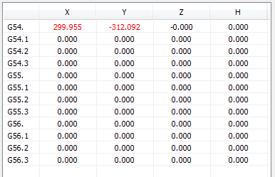

Posizioni iniziali predefinite
Durante la lavorazione, è possibile modificare la posizione iniziale degli assi XYZ e il valore H dello spessore del materiale con i comandi iso G54, G55 o G56. Per accedere a questi parametri:

Per modificare una posizione: